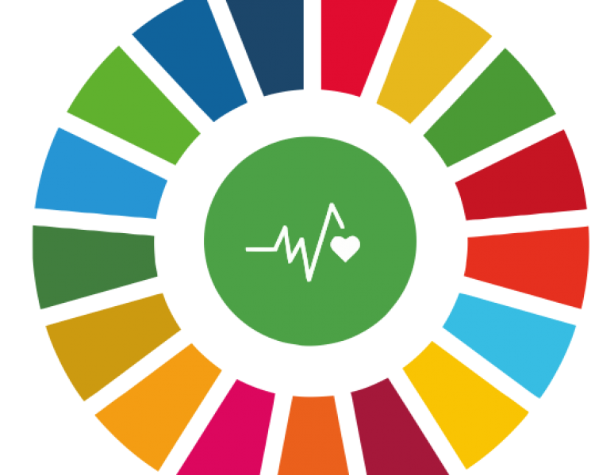

Reduzir a mortalidade prematura por doenças não transmissíveis

A meta 3.4 dos Objetivos de Desenvolvimento Sustentável (ODS) estabelecidos pela Organização das Nações Unidas (ONU) até 2030 enfatiza a necessidade de reduzir em um terço a mortalidade prematura por doenças não transmissíveis, destacando a importância da prevenção, tratamento e promoção do bem-estar mental e emocional.
As doenças não transmissíveis, como as cardiovasculares, câncer, doenças respiratórias crônicas e diabetes, representam uma carga significativa para a saúde global. A abordagem para atingir essa meta envolve a implementação de estratégias abrangentes de prevenção, detecção precoce e tratamento dessas condições, com o objetivo de reduzir a mortalidade prematura relacionada a essas doenças.
A prevenção desempenha um papel crucial na redução do risco de doenças não transmissíveis. Isso inclui a promoção de estilos de vida saudáveis, como a adoção de uma dieta equilibrada, a prática regular de atividade física, a redução do consumo de tabaco e álcool, e o controle do estresse. Campanhas de conscientização e programas educativos são fundamentais para informar as comunidades sobre a importância da prevenção e adoção de comportamentos saudáveis.
Além da prevenção, é essencial melhorar o acesso a tratamentos eficazes e serviços de saúde para aqueles que já estão enfrentando doenças não transmissíveis. Isso envolve a expansão da cobertura de cuidados de saúde, a promoção de diagnósticos precoces e o acesso a tratamentos inovadores. A pesquisa contínua e o desenvolvimento de terapias mais avançadas também desempenham um papel crucial nesse processo.
A promoção da saúde mental e o bem-estar são aspectos igualmente importantes desta meta. A saúde mental é inseparável da saúde geral, e estratégias que visam reduzir o estigma associado às questões de saúde mental e garantir acesso a serviços de saúde mental são vitais. Iniciativas que promovem ambientes de trabalho saudáveis, apoiam a resiliência emocional nas comunidades e fortalecem os sistemas de apoio social contribuem para a promoção do bem-estar mental.
A colaboração entre governos, organizações de saúde, sociedade civil e setor privado é fundamental para o sucesso na consecução dessa meta. É crucial integrar abordagens multidisciplinares e holísticas nos sistemas de saúde, reconhecendo a interconexão entre saúde física e mental.
Em síntese, a meta 3.4 visa não apenas prolongar a vida, mas também garantir que essa vida seja saudável e plena. Ao focar na prevenção, tratamento e promoção do bem-estar mental, a comunidade global se compromete a criar condições que permitam que as pessoas atinjam seu potencial máximo de saúde e felicidade.